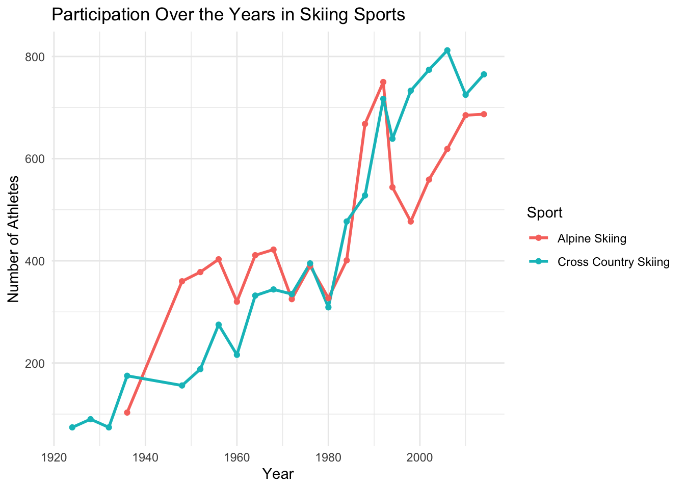

Rows: 271116 Columns: 15
── Column specification ────────────────────────────────────────────────────────
Delimiter: ","
chr (10): name, sex, team, noc, games, season, city, sport, event, medal
dbl (5): id, age, height, weight, year
ℹ Use `spec()` to retrieve the full column specification for this data.
ℹ Specify the column types or set `show_col_types = FALSE` to quiet this message.
library(tidyverse)
Warning: package 'tidyverse' was built under R version 4.3.2
Warning: package 'forcats' was built under R version 4.3.2
Warning: package 'lubridate' was built under R version 4.3.2
── Attaching core tidyverse packages ──────────────────────── tidyverse 2.0.0 ──
✔ dplyr 1.1.3 ✔ readr 2.1.4
✔ forcats 1.0.0 ✔ stringr 1.5.0
✔ ggplot2 3.4.4 ✔ tibble 3.2.1
✔ lubridate 1.9.3 ✔ tidyr 1.3.0
✔ purrr 1.0.2
── Conflicts ────────────────────────────────────────── tidyverse_conflicts() ──
✖ dplyr::filter() masks stats::filter()
✖ dplyr::lag() masks stats::lag()
ℹ Use the conflicted package (<http://conflicted.r-lib.org/>) to force all conflicts to become errors
# A tibble: 182 × 3
noc sport participation
<chr> <chr> <int>
1 SWE Cross Country Skiing 596
2 FIN Cross Country Skiing 590
3 NOR Cross Country Skiing 578
4 AUT Alpine Skiing 556
5 USA Alpine Skiing 552
6 USA Cross Country Skiing 538
7 ITA Cross Country Skiing 528
8 SUI Alpine Skiing 520
9 ITA Alpine Skiing 498
10 FRA Alpine Skiing 476
# ℹ 172 more rows
top_countries |>slice_max(participation, n =10) |>ggplot(aes(x =reorder(noc, participation), y = participation, fill = sport)) +geom_bar(stat ="identity", position ="dodge") +coord_flip() +labs(title ="Top 10 Countries by Participation in Skiing Sports",x ="Country (NOC)",y ="Number of Athletes",fill ="Sport" ) +theme_minimal()
# A tibble: 41 × 3
sport year participation
<chr> <dbl> <int>
1 Cross Country Skiing 1924 74
2 Cross Country Skiing 1928 90
3 Cross Country Skiing 1932 74
4 Alpine Skiing 1936 103
5 Cross Country Skiing 1936 175
6 Alpine Skiing 1948 360
7 Cross Country Skiing 1948 156
8 Alpine Skiing 1952 378
9 Cross Country Skiing 1952 188
10 Alpine Skiing 1956 403
# ℹ 31 more rows
yearly_trends |>ggplot(aes(x = year, y = participation, color = sport, group = sport)) +geom_line(size =1) +geom_point() +labs(title ="Participation Over the Years in Skiing Sports",x ="Year",y ="Number of Athletes",color ="Sport" ) +theme_minimal()
Warning: Using `size` aesthetic for lines was deprecated in ggplot2 3.4.0.
ℹ Please use `linewidth` instead.

G Analysis
G.1 Correlation Between Medal Wins and Physical Attributes